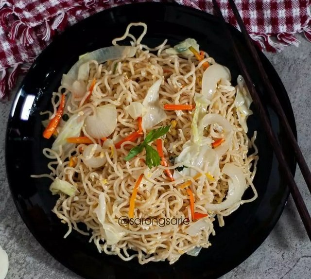
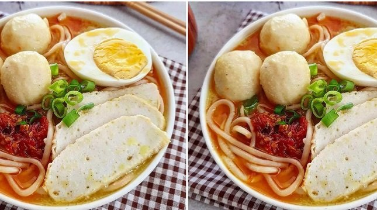
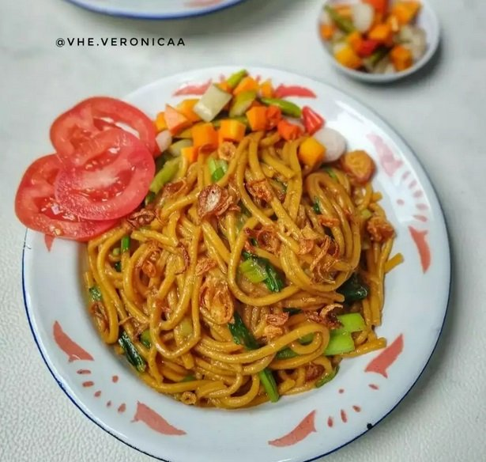
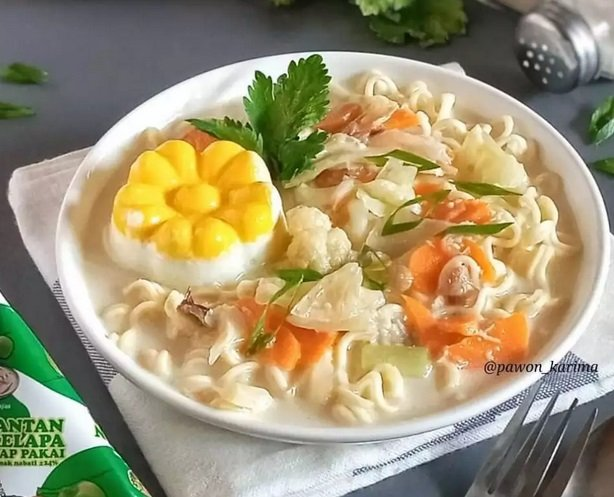
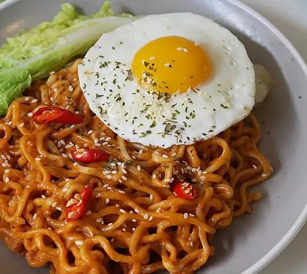
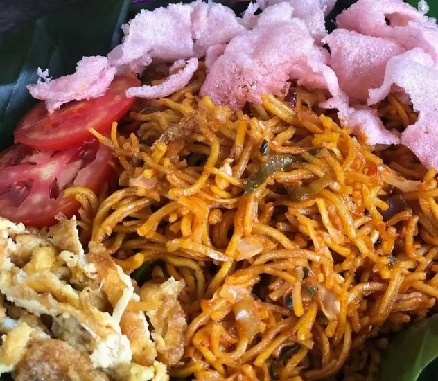
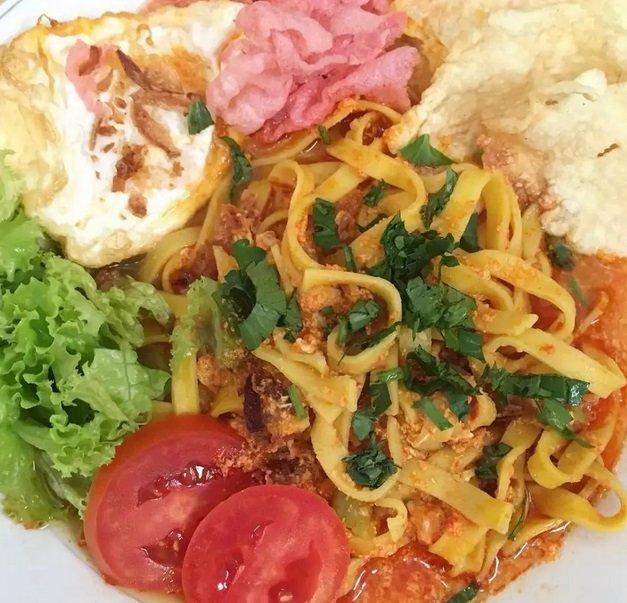

Resep Aneka Olahan Mi yang Lezat dan Menggugah Selera, Kuah Hingga Goreng
Resep aneka olahan mi di bawah ini bisa Anda coba untuk buat di rumah. Mi merupakan bahan makanan populer yang banyak digemari oleh masyarakat dari segala usia. Selain rasanya yang lezat, mi cukup mudah diolah dan dikreasikan dengan berbagai macam bahan pendamping. Banyak sekali pilihan masakan mie yang unik dan menggugah selera. Mulai dari yang berkuah hingga goreng. Sebagai inspirasi, berikut merdeka.com membagikan beberapa resep olahan mi yang lezat dilansir dari laman BrilioFood dan berbagai
1. Mie Goreng Ndeso
Bahan:
- 1 bungkus panjang mie telur, rebus, saring, sisihkan, beri sdikit minyak, aduk rata
- 3 siung bawang putih besar, gepek, cincang kecil-kecil
- 1/4 kobis, iris-iris
- 1 wortel kecil, potong panjang
- 1 bawang bombay (optional)
- 1 butir telur
- Daun bawang dan seledri secukupnyaCara Membuat:
- Tumis bawang putih dengan minyak yang agak banyak sampai wangi mulai cokelat.
- Masukkan telur, aduk-aduk pelan.
- Masukkan wortel, beri sedikit air
- Masukkan garam dan kaldu bubuk.
- Setelah wortel mulai matang dan air menyusut
- Masukkan mie, aduk-aduk rata.
- Masukkan kobis, daun bawang, seledri
- Koreksi rasa
- Sajikan
2.Mie Laksa Singapore
Bahan:
- Mie rebus/kwetiau/bihun sesuai selera
- Telur rebus secukupnya
- Tauge (optional)
- Tahu kulit (optional)
- Daun kemangi sesuai selera
- Sambal belacan
- Jeruk nipisBahan kuah:
- 1 pack bakso ikan
- Fish cake iris tipis
- 2 batang serai geprek
- 3 lbr daun salam
- 3 lbr daun jeruk
- 2 buah bunga lawang
- Kaldu bubuk, garam, dan merica secukupnya
- 2 pack santan instanBumbu halus:
- 6 siung bawang putih
- 8 butir bawang merah
- 3 buah cabai merah
- 3 cm kunyit
- 2 cm lengkuas
- 4 buah kemiri sangrai
- 1 sdt ketumbar
- 2 blok terasi
- 2 sdm ebi rendam air panasCara Membuat:
- Tumis bumbu halus, daun salam, daun jeruk, bunga lawang dan serai sampai harum.
- Tuang air, biarkan mendidih lalu saring.
- Didihkan kembali, masukkan santan, bakso ikan, fish cake, beri bumbu.
- Masak sampai matang
- Tata mi di mangkuk, tuang kuahnya, sajikan dengan pelengkap.
3. Mie Gomak Khas Medan
Bahan:
- Mie lidi (rebus bersama 1 sdm minyak goreng)
- 4 bonggol sawi, potong-potong
- 2-3 sdm kecap manis
- 1 sdt kaldu jamur
- 1/2 sdt garam
- 1 sdt merica bubuk
Bumbu halus:
- 6 siung bawang merah
- 3 siung bawang putih
- 3 buah kemiri
Pelengkap:
- Acar
- Bawang merah goreng
- Tomat
Cara Membuat:
- Tumis bumbu halus sampai wangi.
- Masukkan mie, kecap manis, garam , kaldu jamur, lada
- Tambah sedikit air kalau terlalu kering
- Koreksi rasa
- Masak hingga meresap, terakhir masukkan sawi masak sebentar saja
- Sajikan dengan pelengkap
4.Mie Kuah Santan
Bahan:
- 2 keping mie keriting
Bahan kuah:
- 1 buah wortel, potong-potong
- Segenggam potongan kol
- 1/4 kembang kol, potong-potong
- 2 lembar daun salam
- 2 lembar daun jeruk
- 1 batang serai
- 1 batang Lengkuas
- 65 ml santan
- Garam, lada bubuk, dan kaldu jamur secukupnya
- 500 ml air
Bumbu halus:
- 3 siung bawang putih
- 2 butir kemiri
- 2 cm kencur
Taburan:
- Bawang goreng
- Irisan daun bawang
Pelengkap:
- Telur kukus
Cara Membuat:
- Rebus mie sampai aldente. Sisihkan.
- Tumis bumbu halus sampai harum.
- Masukkan daun salam, daun jeruk, lengkuas, dan serai.
- Masukkan wortel, kol, dan kembang kol.
- Beri santan dan air
- Beri garam, lada bubuk, dan kaldu jamur secukupnya. Aduk.
- Penyajian: Tata mie di atas mangkuk. Siram dengan kuah santan.
- Taburi bawang goreng dan irisan daun bawang. Sajikan dengan telur kukus.
5.Mie Ramen Goreng Ala Rumahan
Bahan:
- 1 bungkus ramen goreng instan
- 1 butir Telur
- Sawi putih secukupnya
- 1 sachet Bon cabe ukuran kecil
- Wijen secukupnya
- Parsley kering (optional)
- 100 ml susu UHT
Cara Membuat:
- Rebus mie sampai matang atau sesuai petunjuk di kemasan.
- Setelah matang angkat dan tiriskan.
- Masukkan bumbu instan ke dalam panci, tambahkan susu, aduk hingga mengental. Setelah itu masukkan mie, tambahkan Bon cabe, aduk rata.
- Sajikan di piring
- Tambahkan telur, sawi yang sudah direbus irisan cabe wijen, dan parsley.
- Siap disajikan
6. Mie Goreng Kari
Bahan:
- Mie kuning secukupnya
- 2 sdm cabai, giling halus
- 3 siung bawang merah
- 2 siung bawang putih
- 2 lembar kol
- 2 batang daun bawang
- 1 batang seledri
- 1 sdm rempah kari
- 1/2 sdt chili powder
- Kecap sesuai selera
- Garam dan lada sesuai selera
Cara Membuat:
- Tumis bawang putih dan bawang merah hingga wangi. Masukan cabai giling.
- Masak hingga matang.
- Tambahkan kol, daun bawang, dan seledri. Masukkan kari dan bubuk cabai. Aduk rata.
- Tambahkan kecap, garam, dan lada sesuai selera.
- Masukkan mie kuning yang sudah direbus. Aduk hingga rata.
- Sajikan dengan kerupuk, telur, dan bawang goreng.
7. Mie Rebus Resto Padang
Bahan:
- Mie kuning pipih
- 1 butir telur
- Daun bawang iris
- Tomat iris
- 1-2 sdm kecap manis
- 1 sdm Saori saus tiram
- Garam atau penyedap
- Air
Bahan halus:
- 1 sdm bawang merah
- 1 sdm bawang putih
- 1 sdm cabai giling
Bahan pelengkap:
- Telur ceplok
- Selada
- Timun
- Emping atau kerupuk merah
- Bawang goreng
- Seledri
Cara Membuat:
- Rebus mie kuning setengah matang lalu sisihkan.
- Tumis bawang merah dan bawang putih hingga wangi.
- Masukkan cabai giling, masak hingga matang.
- Tambahkan air secukupnya. Masukkan satu butir telur sambil diaduk cepat.
- Tambahkan daun bawang dan irisan tomat. Tambahkan saus tiram, kecap, dan garam atau penyedap.
- Masukkan mie kuning, aduk-aduk sebentar.
- Koreksi rasa
- Hidangkan bersama pelengkap.
8. Mie Tek-Tek Spesial

Bahan:
- Mie telur secukupnya
- Sosis, bakso ayam, dan bakso sapi
- Sawi hijau dan kol secukupnya
- Saledri secukupnya
- Daun bawang secukupnya
- 2 butir telur
Bumbu halus:
- 5 siung bawang putih, halus
- 1 sdm penuh cabai, giling halus
Bumbu:
- 1/2 sdt lada
- Garam
- Kaldu bubuk
- 3 sdm kecap manis
- 2 sdm kecap asin
Cara Membuat:
- Tumis bawang putih dan cabai merah halus. Masukkan kecap asin dan kecap manis.
- Aduk-aduk lalu masukkan sayuran.
- Tambahkan sedikit air, masukkan semua bumbu. Aduk rata.
- Masukkan topping. Ceplok dua butir telur, biarkan sebentar hingga telur agak mengeras.
- Aduk rata bersama bahan lain.
- Masukkan mie yang sudah direbus, aduk hingga tercampur sempurna.
- Sajikan dengan kerupuk, acar, atau topping lainnya.